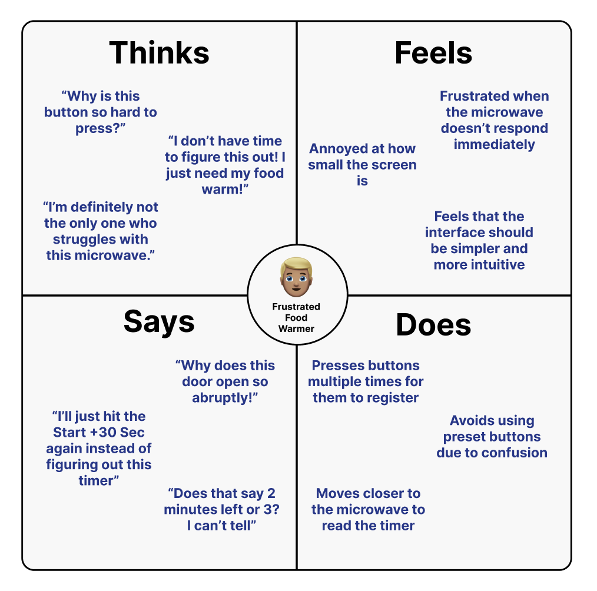
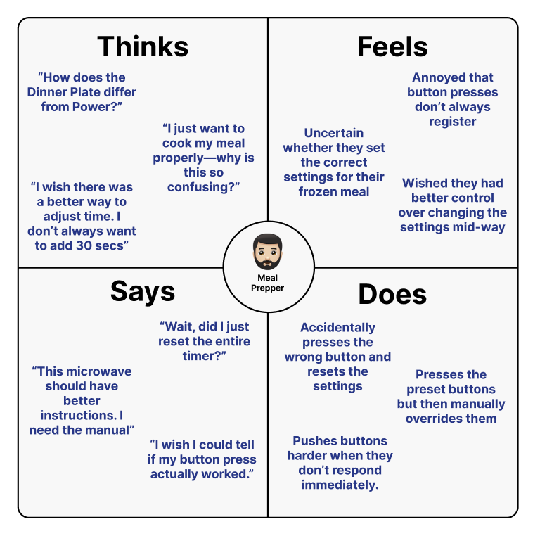

personas
&
storyboarding
context
This page explores the usability and overall user experience of a microwave interface found in a shared dorm space
Through real-life observations and 3 user interviews, the goal was to identify usability issues, understand user behavior, and create personas that relate to the perceptions of the microwave's interface
interface
The project is focused around a simple microwave button interface in a suite common area
The microwave is in a public space and is used by a lot of people, making it an ideal interface for observation

interview
3 college students were observed and interviewed for their usage of the microwave interface
questions
- When do you typically use the microwave interface?
- How often do you use it?
- How did you expect it to work before you used it the first time?
- How do you start the microwave?
- What do you do to stop the microwave before the timer ends?
- What features do you use the most often?
- Have you had trouble understanding the functionality of the buttons?
- How effective is the screen for configuring settings and viewing the timer?
- Do you prefer microwaves with dials, buttons, or a touchscreen?
- What challenges do you encounter when using the microwave interface?
observations
- Users had difficulty opening the microwave using the button because it was hard to press, which resulted in the door being opened abruptly.
- Users had to press buttons multiple times for them to register
- Buttons had no tactical feedback, making it harder to know whether the button registered
- Users often just pressed the start button instead of using the other functionality and buttons
- When the other preset functionality was used, users were unsure about how it differed from the manual settings
- Users often had to view the timer clock up close because it was too small
interview results
All users primarily use the microwave for reheating leftovers, making quick meals, or heating frozen snacks. They rely on it when they need something fast and convenient, often using it between classes to eat a hot meal.
Two users use the microwave almost daily, either for meals or snacks. One user uses it a few times a week for reheating leftovers.
Two users assumed the microwave would have a pull handle instead of a push-button release mechanism. They found this hard to fully press, resulting in the door being opened abruptly.
One user assumed the button functions would be more intuitive and clearly labeled.
Two users always use the "Start +30 Sec" button instead of manually entering time because it's the quickest and easiest option.
One user prefers entering the time manually using the keypad for frozen meals.
Two users press the "Pause/Off" button but were initially unsure if it paused or canceled the current timer/settings.
Another user prefers opening the door to stop it because they are accustomed to doing this with other microwaves.
All users rely on the "Start +30 Sec" button as their primary method of using the microwave
One user has tried preset buttons like "Dinner Plate" or "Reheat", but they don't always use them because it's unclear how they can adjust cooking time or the power level.
All users found certain buttons confusing, especially the preset options. Some were not sure how preset settings like "Popcorn" or "Defrost" differed from manually setting a time. This led all the users to avoid using the preset options altogether.
All users found the screen too small and difficult to read unless they were standing very close.
One user mentioned that they had to move closer to check the timer—having difficulty distinguishing similar-looking numbers on the display.
Two users prefer buttons, but they want them to be easier to press.
One user prefers a touchscreen for a more intuitive and easy-to-use interface. They wanted an interface that was similar to other devices they use like their phone or tablet.
All users found the buttons difficult to press, requiring multiple attempts.
Two users struggled with the door release button, expecting and preferring a handle instead.
All users had difficulty reading the small display.
personas
Based on the interviews and observations, 2 personas were created to represent the primary users of the microwave interface—describing what users think, feel, say, and do
frustrated food warmer

Brief Description: John is a busy college student who just wants to quickly heat up his food.
Interface Problems: John struggles with the hard-to-press buttons, unclear door release mechanism, and small screen, making microwaving food incredibly frustrating.
Why This Persona Represents Users: John represents users who prioritize speed and simplicity but face usability challenges that make the microwave harder to use than expected.
meal prepper
Brief Description: Tyler is a meal planner who wants to use the microwave's preset functions but finds them incredibly unintuitive.
Interface Problems: Tyler struggles with confusing preset options, unreliable button responsiveness, and accidentally reseting settings when manually adjusting the time.
Why This Persona Represents Users: Tyler represents users who want more control over microwaving food but are frustrated by the unclear instructions and inconsistent button feedback.

storyboard
A storyboard was created to visualize the user journey of the microwave interface user from start to end

lessons
It was interesting to see how the microwave interface was used by different users
While being fairly simple, without clear instructions, the interface became difficult to use
Things I learned:
- Users prioritize speed over extra features: users want to quickly heat up their food and often overlook the extra features
- Minor design flaws can lead to frustrated users: a small screen and hard-to-press buttons can lead to a bad user experience
- Users want tactile feedback: buttons should have a clear click when pressed